생산자동화산업기사 (2005-03-20 기출문제)
1과목: 기계가공법 및 안전관리
1. 큐폴러(용선로)의 용량 표시로 옳은 것은?
- 매시간당 용해량(ton으로 표시)
- 1회에 용출되는 최대량
- 매시간당 송풍량
- 1회에 지금을 장입할 수 있는 최대량
(정답률: 42%)

2. 선반에서 척의 크기를 표시한 것 중 옳은 것은?
- 공작물의 최대지름
- 척의 바깥지름
- 조의 수량
- 척의 두께
(정답률: 32%)
3. 공작물의 담금질 경화시키고자 하는 면에 대응하도록 적당한 코일을 만들어 고주파 전류를 통하여 표면경화시키는 것은?
- 고체 침탄법
- 고주파 경화법
- 청화법
- 질화법
(정답률: 73%)
4. 용접의 단점으로 틀린 것은?
- 잔류응력(殘留應力)이 생기기 쉽다.
- 자재가 많이 소모된다.
- 품질검사가 곤란하다.
- 용접 모재의 재질에 대한 영향이 크다.
(정답률: 34%)
5. 길이 측정기 중 레버(lever)를 이용하는 것은?
- 마이크로미터(micrometer)
- 다이얼 게이지(dial gauge)
- 미니미터(minimeter)
- 옵티컬 플랫(optical flat)
(정답률: 48%)
6. 단조에 관한 설명으로 틀린 것은?
- 재료를 필요한 모양으로 변화시키는 것이다.
- 금속의 조직입자를 미세화한다.
- 단조중 조직의 변형과 재결정이 반복된다.
- 변태점에서의 단조는 질을 향상시킨다.
(정답률: 54%)
7. 항온열처리와 관계가 없는 것은?
- 재결정온도
- 변태
- 시간
- 온도
(정답률: 32%)
8. 각도를 측정할 수 없는 측정기는?
- 컴비네이션 세트
- 사인 바
- 실린더 게이지
- 수준기
(정답률: 53%)
9. 지그(jig)의 주요 구성요소가 아닌 것은?
- 위치 결정구(locator)
- 부싱(bushing)
- 클램프(clamp)
- 가이드 플레이트(guide plate)
(정답률: 19%)
10. 인발 작업에서 지름 10mm의 강선을 지름 5mm로 만들었을 때 단면 감소율은?
- 75%
- 50%
- 40%
- 25%
(정답률: 7%)
11. 프레스가공 방식에서 상하형이 서로 무관계한 요철( )을 가지고 있으며 재료를 압축함으로써 상하면상에는 다른 모양의 각인(刻印)이 되는 가공법은?
- 코이닝 가공(coining work)
- 굽힘가공(bending work)
- 엠보싱가공(embossing work)
- 드로잉가공(drawing work)
(정답률: 43%)
12. 검출기를 기계의 테이블에 직접 부착하여 피드백(Feedback)을 행하게 하여 정밀도를 높일 수 있는 NC 서보의 종류는 무엇인가?
- 개방회로 방식(Open loop system)
- 반폐쇄회로 방식(Semi-closed loop system)
- 폐회로 방식(Closed loop system)
- 하이브리드 서보 방식(Hybrid servo system)
(정답률: 45%)
13. 연삭숫돌 WA 60 K m V 에 대한 각각의 표시에 대한 설명으로 올바른 것은?
- m : 조직
- K : 결합제
- WA : 입도
- V : 결합도
(정답률: 25%)
14. 기어나 나사를 제작 가공할 수 있는 것은?
- 인발
- 용접
- 전조
- 압연
(정답률: 39%)
15. 다음 중 일반적으로 대형 강제파이프의 제작방법으로 가장 많이 사용되는 것은?
- 용접
- 인발
- 압출
- 단조
(정답률: 34%)
16. 가공하는 전극과 공작물 사이에 지립(砥粒)의 역할을 겸하는 절연체를 개재시켜 전해작용으로 생긴 양극의 산화피막을 절연체의 기계적 작용으로 제거하는 가공법은?
- 전기분해
- 전기화학 가공
- 전해연삭
- 방전가공
(정답률: 73%)
17. 회전하는 상자에 공작물과 숫돌입자, 공작액, 콤파운드 등을 함께 넣어 공작물이 입자와 충돌하는 동안에 그 표면의 요철(
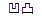
)을 제거하며, 매끈한 가공면을 얻는 방법은?- 버니싱(burnishing)
- 롤러 다듬질(roller finishing)
- 숏피닝(shot-peening)
- 배럴 다듬질(barrel finishing)
(정답률: 48%)
18. 속이 빈(주철관등)주물을 주조하는 가장 적합한 주조법은?
- 쉘 주형법(shell moulding process)
- 쇼 주조법 (show process)
- 인베스트먼트 주조법 (investment process)
- 원심 주조법 (centrifugal casting)
(정답률: 23%)
19. 압연 롤러의 구성 요소 중 틀린 것은?
- 네크(neck)
- 워블러(wobbler)
- 몸체(body)
- 캘리버(caliber)
(정답률: 35%)
20. 밀링머신에서 스파이럴 밀링장치로 커팅할 때, 가공물의 원통직경을 120㎜, 스파이럴 각도를 30°로 할 경우의 리드(lead) 값은?
- 약 548㎜
- 약 653㎜
- 약 623㎜
- 약 638㎜
(정답률: 25%)
2과목: 기계제도 및 기초공학
21. 다음 중 전단력이 작용하는 곳에 가장 적합한 볼트는?
- 스터드 볼트
- 탭 볼트
- 리머 볼트
- 스테이 볼트
(정답률: 17%)
22. 기어에서 전위량을 모듈로 나눈 값을 무엇이라 하는가?
- 물림률
- 전위계수
- 언더컷
- 미끄럼률
(정답률: 59%)
23. 지름 50㎜의 연강축을 사용하여 350rpm으로 40㎾을 전달할 묻힘키의 길이는 몇 ㎜ 정도가 적당한가? (단, 키 재료의 허용전단응력은 5㎏f/㎜2, 키의 폭과 높이 b × h = 15mm × 10mm 이며 전단저항만 고려한다.)
- 38㎜
- 46㎜
- 60㎜
- 78㎜
(정답률: 34%)
24. 베어링의 내경 번호가 00 이면 내경치수는 몇 ㎜인가?
- 5㎜
- 10㎜
- 15㎜
- 20㎜
(정답률: 64%)
25. 지름 20㎜, 피치 2㎜인 3줄 나사를 1/2 회전하였을 때 이 나사의 진행거리는?
- 1㎜
- 3㎜
- 4㎜
- 6㎜
(정답률: 63%)
26. 외력의 작용 없이 스스로 풀어지지 않는 나사의 자립조건은? (단, α는 리드각, ρ는 마찰각이다.)
- ρ ≥ α
- ρ = 2α
- α ＜ 2ρ
- ρ ＞ 2α
(정답률: 26%)
27. 회전 운동을 직선 운동으로 바꿀 때 쓰이는 기어는 다음의 어느 것인가?
- 헬리컬 기어
- 베벨 기어
- 랙과 피니언
- 웜과 웜기어
(정답률: 40%)
28. 그림과 같은 스프링장치에서 각각의 스프링의 상수가 K1 = 4㎏f/㎝, K2 = 5㎏f/㎝, K3 = 6㎏f/㎝ 일 때, 하중방향으로의 처짐량이 δ=150㎜ 일 경우 하중 P는 얼마인가?
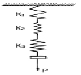
- P = 251㎏f
- P = 225㎏f
- P = 31.4㎏f
- P = 24.3㎏f
(정답률: 17%)
29. 하중이 축에 직각으로 작용하는 곳에 쓰이는 베어링은?
- 레이디얼 베어링
- 컬러 베어링
- 스러스트 베어링
- 피벗 베어링
(정답률: 19%)
30. 평벨트에 비해 V 벨트 전동의 특징이 아닌 것은?
- 미끄럼이 적고, 전동 효율이 좋다.
- 축 사이의 거리가 평벨트보다 짧다.
- 축간거리를 마음대로 할 수 있다.
- 운전이 정숙하고 충격을 완화한다.
(정답률: 30%)
31. 서피스 모델링(surface modeling)의 특징으로 거리가 먼것은?
- NC가공 정보를 얻을 수 있다.
- 은선 제거가 불가능하다.
- 물리적 성질 계산이 곤란하다.
- 복잡한 형상표현이 가능하다.
(정답률: 6%)
32. 2개의 벡터가 있다. 이들 2개의 벡터를 이용하여 두벡터에 동시에 수직한 벡터를 구하고자 한다. 이를 위한 방법으로 다음 중 가장 적합한 것은?
- 두 벡터를 cross product 한다.
- 두 벡터를 scalar product 한다.
- 두 벡터를 unit vector화 한다.
- 두 벡터를 dot product 한다.
(정답률: 43%)
33. 공구의 경로(CL data)를 입력하여 특정의 NC 공작기계에 맞는 NC프로그램을 생성해내는 도구는?
- 산술 계산기(arithmetic calculator)
- 포스트 프로세서(post processor)
- 번역기(translation unit)
- 테이프 판독기(tape reader)
(정답률: 48%)
34. CNC 공작기계 작업 중 안전에 관한 설명으로 틀린 방법은?
- chip 제거는 기계가 정지 후 한다.
- 제품상태 확인은 기계가 정지 후 한다.
- 작업 중 안전을 위해 안전문을 닫는다.
- 공구 모서리에 의한 부상을 방지하기 위하여 작업 중 장갑을 착용한다.
(정답률: 78%)
35. CNC선반 프로그램에서 G96 S150 M03; 일 때 S150을 가장 잘 설명한 것은?
- 이송속도를 150mm/sec으로 나타낸다.
- 주축속도 일정제어의 절삭속도를 150m/min으로 나타낸다.
- 매 회전 이송속도를 150mm/rev으로 나타낸다.
- 주축속도 일정제어의 주축회전수를 150rpm으로 나타낸다.
(정답률: 23%)
36. CNC가공의 처리과정을 옳게 나타낸 것은?
- 수치정보 → 지령펄스열 → 서보구동 → 가공
- 지령펄스열 → 서보구동 → 수치정보 → 가공
- 서보구동 → 수치정보 → 지령펄스열 → 가공
- 수치정보 → 서보구동 → 지령펄스열 → 가공
(정답률: 54%)
37. CPU내에서 자료를 처리할 때 발생하는 자료 이동의 병목현상을 감소시키기 위한 것은?
- Coprocessor
- BIOS
- Cache memory
- Instruction set
(정답률: 43%)
38. CNC선반 고정싸이클 프로그램에서 Q100 의 의미는?
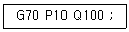
- 정삭가공 지령절의 첫번째 전개번호
- 정삭가공 지령절의 마지막 전개번호
- 황삭가공 지령절의 첫번째 전개번호
- 황삭가공 지령절의 마지막 전개번호
(정답률: 18%)
39. 어떤 도형을 X축으로 1배, Y축으로 2배 하려고 할 때 변환행렬 TH 는?
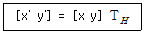
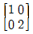
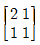
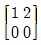
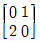
(정답률: 34%)
40. CAD의 물체 표현방법 중에서 3차원적인 물체의 형상 표현 방법에 속하지 않는 것은?
- 경계표현에 의한 방법
- 프리미티브에 의한 방법
- 면계 공간조합에 의한 방법
- 공간격자에 의한 방법
(정답률: 30%)
3과목: 자동제어
41. 주파수 전달함수가 G(jω) = 1+j1 일 경우 위상은?
- 0°
- 45°
- 90°
- 180°
(정답률: 58%)
42. 보기 시퀀스를 코딩할 때 빈칸 ①, ② 에 해당되는 명령어는?
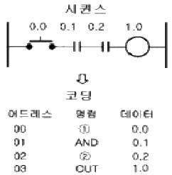
- ① LOAD ② AND
- ① AND ② NOT
- ① OR ② AND
- ① LOAD ② OR
(정답률: 50%)
43. G(s) = (s+2)(s+3) / (s+4)(s+5) 일 때 극값은?
- -2 , -3
- -3 , -4
- -2, -3, -4, -5
- -4 , -5
(정답률: 35%)
44. 그림과 같은 기계시스템에서 f(t)를 입력으로 하고 x(t)를 출력으로 하였을 때의 전달함수는?
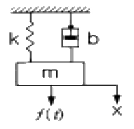
- ms2+bs+k
- 1 / ms2+bs+k
- s / ms2+bs+k
- k / ms2+bs+k
(정답률: 12%)
45. 프로그램 입력장치를 이용하여 시퀀스 프로그램의 내용을 PLC의 메모리에 입력하는 것은?
- 코딩
- 로딩
- 시물레이션
- AND
(정답률: 44%)
46. 응답이 처음 희망하는 값의10%에서 90%까지 도달하는데 필요한 시간을 의미하는 용어는?
- 오버슈트
- 지연시간
- 응답시간
- 상승시간
(정답률: 46%)
47. 다음 중 연산증폭기(OP Amp)의 기본적인 연산기능이 아닌것은?
- 증폭기능
- 감산기능
- 미/적분기능
- 행렬연산기능
(정답률: 36%)
48. 자동 제어계를 제어량의 성질에 따라 분류할 때 서보기구에서의 제어량은?
- 수위, PH
- 온도, 압력
- 위치, 각도
- 속도, 전기량
(정답률: 60%)
49. 자동제어계를 해석하고 설계하기위해 주로 사용되는 기준 입력에 속하지 않는 것은?
- 계단함수
- 삼각함수
- 램프(등속)함수
- 포물선(등가속)함수
(정답률: 18%)
50. 다음 중 AND회로의 논리도와 논리식이 맞는 것은?
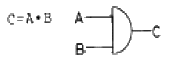
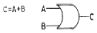
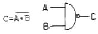
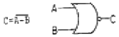
(정답률: 57%)
51. 다음 중 기어 펌프의 특징을 나타낸 것은?
- 토출압력에 대한 맥동이 적고 소음이 작다.
- 기밀이 유지되어 압력저하가 일어나지 않는다.
- 가변용량형으로 제작이 가능하다.
- 구조가 간단하고 가격이 저렴하다.
(정답률: 34%)
52. 다음의 기호가 나타내는 것은 무엇인가?
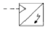
- 적산 유량계
- 회전 속도계
- 토크계
- 신호 변환기
(정답률: 24%)
53. 다음 밸브의 설명으로 틀린 것은?
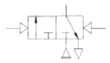
- 3/2-way밸브
- 메모리형
- 유압에 의한 작동
- 정상 상태 닫힘형
(정답률: 40%)
54. 유압펌프에 관련되는 용어로서 가변용량형 펌프를 올바르게 설명한 것은?
- 토출 에너지가 일정한 펌프
- 토출량을 변화시킬 수 있는 펌프
- 기어가 내접 물림하는 형식의 펌프
- 기어가 외접 물림하는 형식의 펌프
(정답률: 48%)
55. 다음 유공압기호의 명칭으로 옳은 것은?
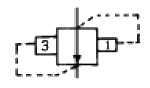
- 시퀀스 밸브
- 일정비율 감압 밸브
- 무부하 밸브
- 카운터 밸런스 밸브
(정답률: 56%)
56. 다음 중 속도제어 회로가 아닌 것은?
- 미터인 회로
- 미터아웃 회로
- 블리드 온 회로
- 블리드 오프 회로
(정답률: 40%)
57. 공압 실린더나 공기 탱크내의 공기를 급속히 방출할 필요가 있을 때나, 공압 실린더 속도를 증가시킬 필요가 있을 때 사용되는 것으로 가장 적당한 밸브는?
- 2압밸브
- 셔틀밸브
- 급속배기밸브
- 체크밸브
(정답률: 67%)
58. 공기압에 사용되는 압력조절밸브(감압밸브)의 용도는?
- 회로 내의 압력을 감압, 일정하게 유지시킨다.
- 실린더를 순차적으로 작동시킨다.
- 실린더의 속도를 조절한다.
- 압력변화를 전기신호로 바꾸어 주는 변환기이다.
(정답률: 73%)
59. 양 끝의 지름이 다른 관이 수평으로 놓여 있다. 왼쪽에서 오른쪽으로 물이 정상류를 이루고 매초 2.8ℓ의 물이 흐른다. B부분의 단면적이 20㎝2이라면 B부분에서 물의 속도는 얼마가 되겠는가?
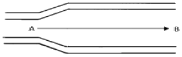
- 14cm/sec
- 56cm/sec
- 140cm/sec
- 56m/sec
(정답률: 40%)
60. 다음 그림의 속도제어 회로의 명칭은?
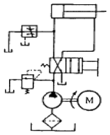
- 재생 회로
- 블리드-오프 회로
- 미터-인 회로
- 미터-아웃 회로
(정답률: 40%)
4과목: 메카트로닉스
61. 2개의 입력 A, B가 모두 1일 때 또는 0 일 때 출력이 1 이 되는 회로를 무슨 회로라 하는가?
- 금지회로
- 다수결회로
- 일치회로
- 배타적 OR회로
(정답률: 24%)
62. 래더도(Ladder Diagram) 혹은 시퀀스 회로도에 의하여 작성된 제어회로를 로직 심벌 언어로 프로그램을 작성하여 시퀀스 제어계를 표시하는 방법은?
- 래더도
- 코딩
- 전개접속도
- 논리도
(정답률: 12%)
63. PLC가 판단할 수 있는 말을 일정한 약속에 따라 순서대로 기입한 것은?
- 프로그래밍(Programming)
- 래더도(Ladder Diagram)
- 프로그램(Program)
- 로더(Loader)
(정답률: 17%)
64. 자계 에너지를 이용하여 검출하는 스위치는?
- 압력 스위치
- 플로트 스위치
- 근접 스위치
- 온도 스위치
(정답률: 38%)
65. 그림에서 계전기에 의한 회로의 기호는?
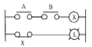
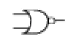
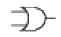
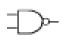
(정답률: 42%)
66. 전기 회로에 사용되는 전기기기 중 수동조작 스위치에 해당되는 것은?
- 솔레노이드
- 전자밸브
- 나이프 스위치
- 액면 스위치
(정답률: 54%)
67. 스위치를 조작하기 전에는 접점이 열려 있다가 조작하면 닫히는 접점을 나타낸 것은?
- a 접점
- c 접점
- b 접점
- 브레이크 접점
(정답률: 74%)
68. 입력된 신호가 공급되면 접점이 순간적으로 동작하며, 부여된 입력신호가 없으지면 설정시간 만큼 지연되어 접점이 복귀하는 타이머는?
- 한시동작 순시복귀 타이머
- 순시동작 한시복귀 타이머
- 순시동작 순시복귀 타이머
- 한시동작 한시복귀 타이머
(정답률: 55%)
69. 수동조작 스위치로서 조작하고 있는 동안에만 접점이 개폐되고 손을 떼면 조작부분과 접점이 본래의 상태로 복귀하는 스위치는?
- 복귀형스위치
- 유지형스위치
- 잔류형스위치
- 개폐형스위치
(정답률: 78%)
70. 다음 그림과 같은 래더회로의 입·출력식으로 옳은 것은?
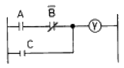
- Y = (
 + B)C
+ B)C - Y = (A +
 )C
)C - Y = A
 C
C - Y = (A
 ) + C
) + C
(정답률: 48%)
71. 다음의 공압 선형액추에이터 중 구조와 기능 면에서 다른 실린더는?
- 다이어프램 실린더
- 충격 실린더
- 격판 실린더
- 벨로스 실린더
(정답률: 16%)
72. PLC 설치시 전기적 잡음의 대책으로 접지를 할 때의 방법으로 맞는 것은?
- PLC 를 접지하지 않을 때는 제어반 접지는 확실하게 해야 한다.
- 접지점은 될 수 있는 대로 PLC본체와 멀리 설정해야 한다.
- 접지용 전선은 2 mm2 이하의 선을 사용한다.
- 전용접지를 할 수 없는 경우에는 공통 접지를 사용할 수 없다.
(정답률: 20%)
73. 다음 중 PLC 출력 모듈의 종류로 볼 수 없는 것은?
- 트랜지스터 출력
- 계전기 출력
- 콘덴서 출력
- SSR 출력
(정답률: 13%)
74. 다음 그림의 시퀀스 회로도에 대한 설명으로 틀린 것은?
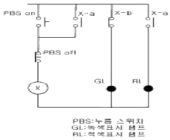
- 이 회로에 전원이 투입되면 GL이 무조건 ON된다.
- PBSON을 누르면 계전기 코일 X가 여자되어 접점 X-b는 열리고 접점 X-a는 닫혀 GL은 소등되고 RL은 점등된다.
- "나."의 상태에서 PBSON을 놓으면 계전기 코일 X에 전류가 끊겨 접점 X-b는 닫히고 접점 X-a는 열려 GL은 점등되고 RL은 소등된다.
- PBSON과 PBSOFF를 동시에 누르면 계전기 코일 X는 동작되지 않아 GL은 점등되고 RL은 소등된다.
(정답률: 34%)
75. 50bar의 시스템 압력을 사용하는 유압모터의 전효율이 80%이며, 1회전당 20㎝3의 유량을 필요로 한다면 출력토크는 약 몇 N·m인가?
- 8.5
- 12.7
- 15.9
- 19.9
(정답률: 23%)
76. 자동화 시스템의 신뢰성을 나타내는 척도가 아닌 것은?
- MTTF
- 가동율
- MTBF
- 신뢰도
(정답률: 37%)
77. 자동 세탁기는 세탁시간을 정해놓으면 자동적으로 세탁이 되는데 이는 어떤 제어라 할 수 있는가?
- 시퀀스 제어
- 되먹임 제어
- 계산기 제어
- 프로세스 제어
(정답률: 53%)
78. 센서의 신호형태 중 시간과 정보 모두 불연속적인 신호는?
- 아날로그 신호(analog singnal)
- 연속신호(continuous singnal)
- 이산시간신호(discrete-time singnal)
- 디지털신호(digital signal)
(정답률: 23%)
79. 어떤 제어시스템에서 0에서 5V를 4개의 2진 신호만을 사용하여 간격을 나눌 때 표시되는 최소값은?
- 0.313V
- 1.250V
- 0.625V
- 0.039V
(정답률: 10%)
80. 제어시스템의 구성요소가 아닌 것은?
- 입력부
- 제어부
- 출력부
- 감압부
(정답률: 69%)
큐폴러(용선로)는 액체 또는 가스를 용해시키는 장치이다. 따라서 용선로의 용량은 매시간당 용해량으로 표시된다. 이는 용선로가 1시간 동안 얼마나 많은 액체나 가스를 용해시킬 수 있는지를 나타내는 지표이다.
다른 보기들은 용선로의 용량을 나타내는 지표가 아니다. 1회에 용출되는 최대량은 용선로의 용출량을 나타내는 것이고, 매시간당 송풍량은 공기처리장치 등에서 사용되는 용어이다. 1회에 지금을 장입할 수 있는 최대량은 용선로의 용량을 나타내는 것이 아니라, 용선로에 장입할 수 있는 최대량을 나타내는 것이다.